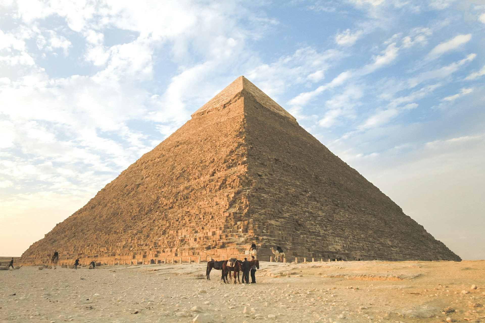

Descubrimiento arqueológico en Egipto revela tesoros ocultos
Un equipo de arqueólogos ha hecho un descubrimiento asombroso en las proximidades de Luxor, Egipto. Después de meses de excavación, encontraron una antigua tumba que ha permanecido oculta durante siglos, revelando una gran cantidad de tesoros y artefactos bien conservados.
El hallazgo ha generado gran emoción entre la comunidad arqueológica, ya que se cree que la tumba perteneció a un alto funcionario del antiguo Egipto. Los artefactos descubiertos incluyen sarcófagos de piedra, estatuas de deidades egipcias, amuletos y joyas, proporcionando nuevas perspectivas sobre la vida y las creencias de esa época.
Los expertos planean realizar estudios detallados para aprender más sobre la historia y el contexto de estos artefactos, lo que podría arrojar luz sobre aspectos aún desconocidos de la civilización egipcia.